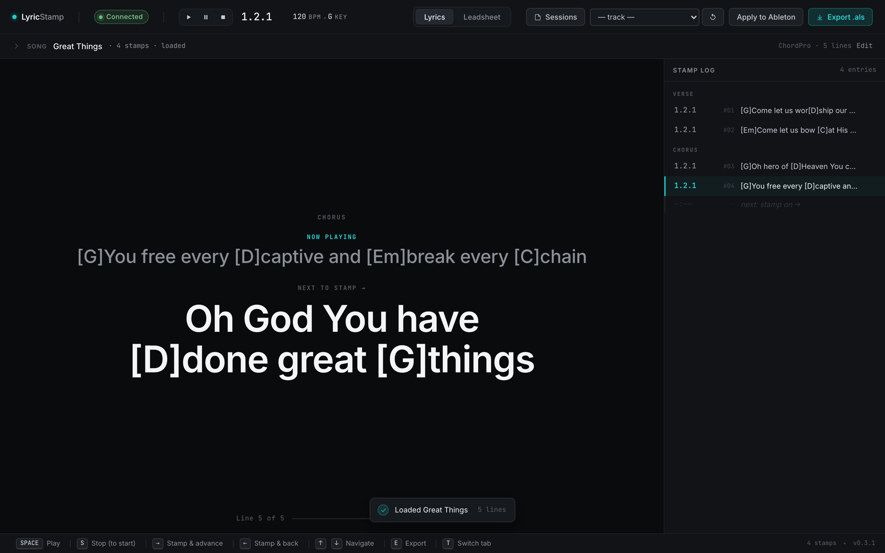
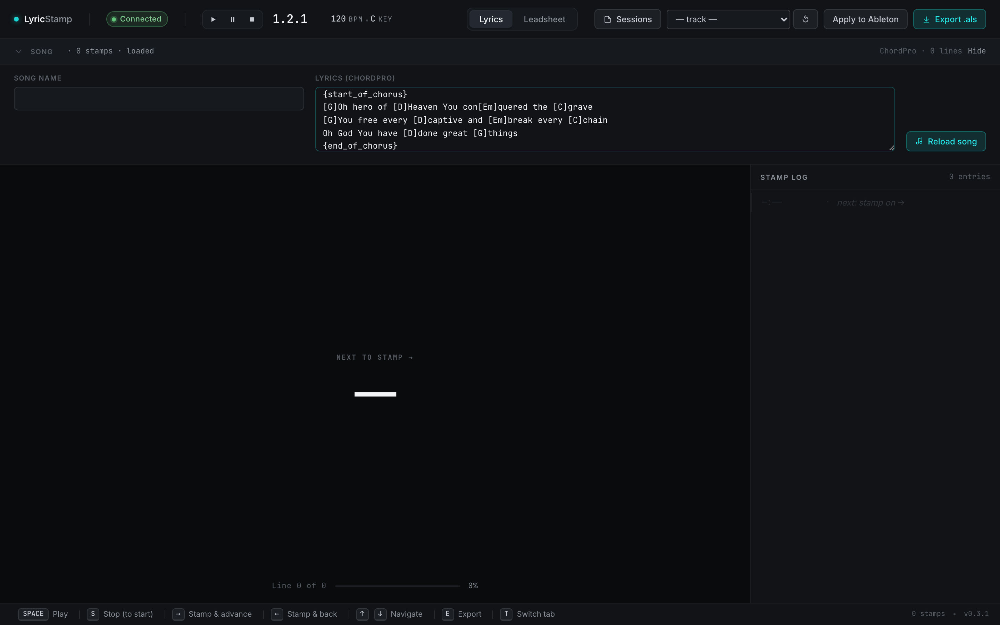
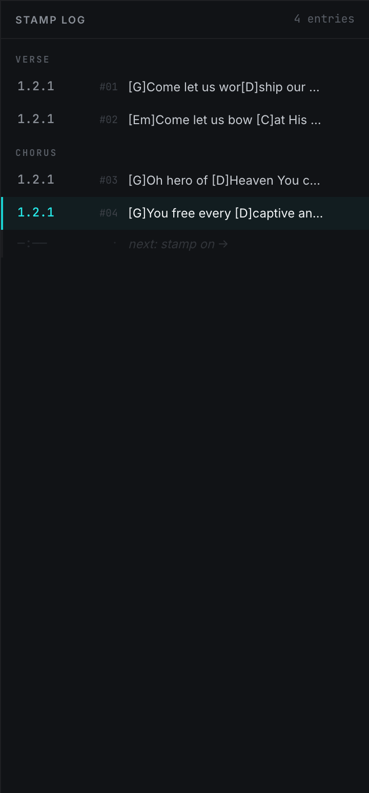
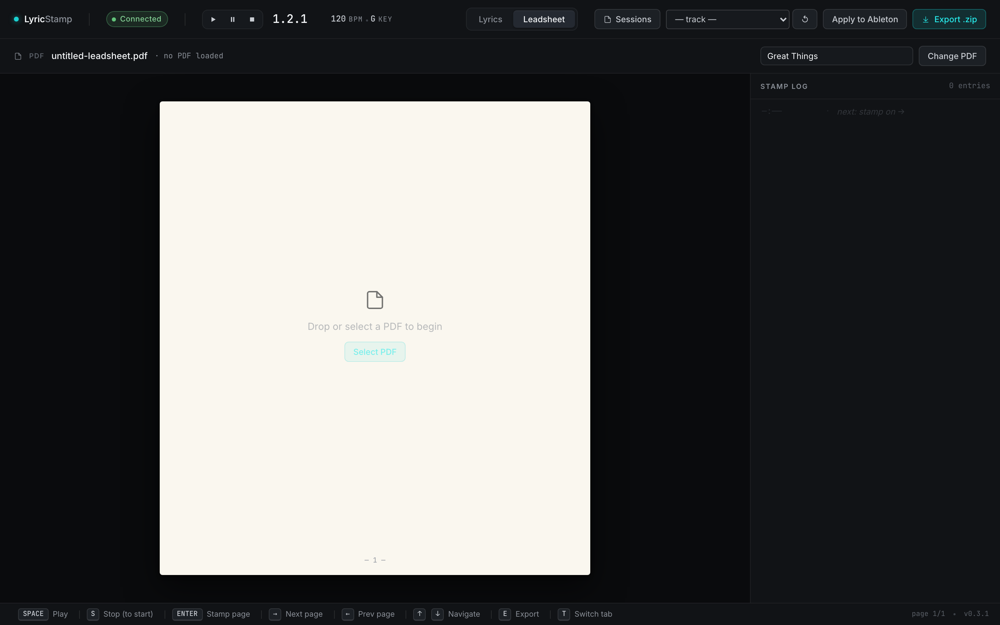
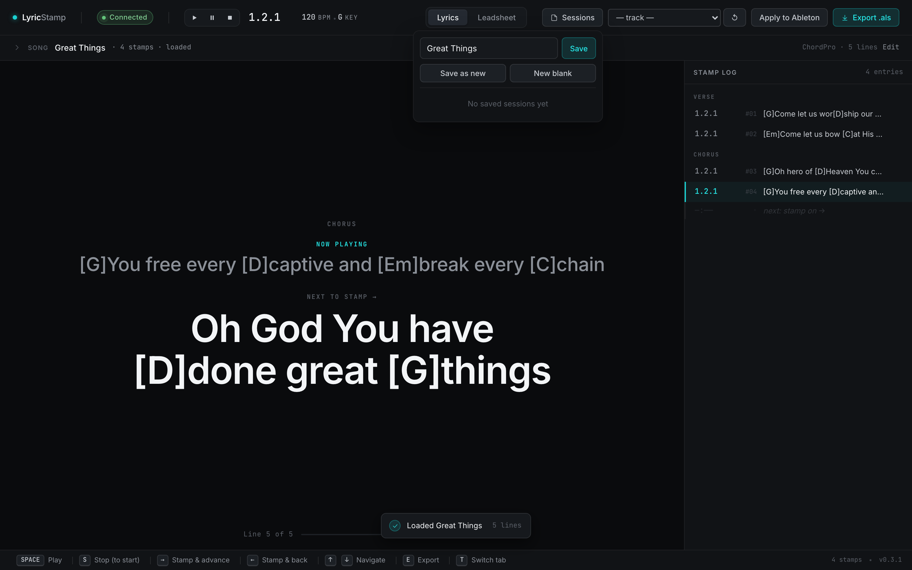

What LyricStamp does for you
- Load a song — paste ChordPro lyrics, or drop in a PDF leadsheet.
- Play along in Ableton Live and stamp each line or page to the beat as it lands — one arrow-key tap per cue.
- Proof your stamps in the log — nudge, undo, or re-stamp until the timing is right.
- Send it to Live — export an
.als/.zip, or click Apply to Ableton to write the cues straight into your open set. - AbleSet shows the words on your iPad, perfectly in time, while the band plays.
How LyricStamp fits together 2-min read
LyricStamp is a small Mac app that sits beside Ableton Live. You don't perform from it — you prepare with it. The goal is always the same: get your lyric cues landing on the right beats inside Live, so a tool like AbleSet can display them to the room while the track plays.
The Mac app in this guide. You load a song, play along, and stamp lyric lines or leadsheet pages to beats. It runs on your computer only — no accounts, no cloud, nothing leaves your Mac.
Your backing-track host (Live 11 or newer). LyricStamp reads Live's playback position so your stamps line up with the real arrangement, and can write the finished cues back into your set.
A separate iPad/web app (made by another company) that reads the lyric cues from your Live set and shows them on stage. LyricStamp's job is to put those cues where AbleSet expects them.
Get the desktop app Everyone · one-time
LyricStamp is a Mac app. Download it once, drag it into your Applications folder, and open it from there.
- Click Download for Mac above. You'll get a
.dmgdisk image — the latest release, every time. - Open the
.dmgand drag the LyricStamp icon onto the Applications folder shown in the window. - Open Applications and launch LyricStamp. (Don't run it from inside the disk image — drag it out first.)
Getting a newer version later
Install or refresh the Ableton remote script Everyone · one-time
For LyricStamp to talk to Ableton Live, Live needs a small remote script called AbletonOSC. You don't install it by hand — LyricStamp ships with its own patched copy and puts it in place with one click. There's no Terminal and no file-copying involved.
When the script isn't installed yet, LyricStamp shows a "Finish connecting LyricStamp to Ableton Live" setup checklist at the top of the window. Work down its three steps — the checklist ticks each one off on its own and disappears once everything's ready.
- Click Install remote script. LyricStamp copies the patched AbletonOSC into your Ableton User Library → Remote Scripts folder (backing up any older copy first). If it can't find your Ableton folder, it shows Locate your Ableton folder… instead — click it and point the picker at your Ableton User Library folder. Step ① turns into a checkmark when it's done.
- Turn it on in Live. In Ableton, open Settings → Link, Tempo & MIDI (older versions: Preferences → Link/Tempo/MIDI), and under Control Surface pick AbletonOSC. Then quit and reopen Ableton Live so it loads the script.
- Watch it confirm itself. When LyricStamp reconnects and sees the patched script, steps ② and ③ tick off automatically and the checklist collapses. That's your proof it worked — nothing else to do.
Connect Ableton Live Everyone
With the remote script installed, connecting is automatic. Start Live, open your set, then open LyricStamp — the top-left badge turns Connected and the transport readout starts following Live's playhead.

- Open Ableton Live and load the set you're preparing.
- Open LyricStamp. Within a second or two the badge should read Connected.
- Press Play in Live — LyricStamp's position readout (
bar.beat) should count along with it. That's your proof the link is live.
Lyrics workflow — paste, stamp, send Everyone
The lyrics workflow is the heart of LyricStamp. You paste your song in ChordPro format, play the track in Live, and tap one arrow key to stamp each line to the beat it should appear on. Then you export or apply the result.
1 · Paste your song (ChordPro)
Open the Song panel at the top of the Lyrics tab, give the song a name, and paste your lyrics. ChordPro is the plain-text format most worship tools export — chords go in square brackets right before the syllable, like [G]Amazing, and section labels use braces like {start_of_chorus}.

- Click the Song header to expand the setup panel.
- Type a Song name and paste your ChordPro lyrics into the editor.
- Click Reload song. The lyric lines appear in the main view, ready to stamp.
- Click the Song header once more to collapse the panel — you don't need it open while you stamp.
[brackets] are kept with the line so they ride along into Live, but they're optional. Section labels like {start_of_verse} simply help you find your place.2 · Stamp each line to the beat
This is the part that feels like magic once it clicks. Play the song in Live, watch the NEXT TO STAMP line, and the instant it should appear on screen, tap →. LyricStamp records the current beat, logs the line, and advances to the next one.
- Make sure LyricStamp says Connected and click once in the main lyric area so the keyboard shortcuts are active.
- Press Space to start Live playing (or press Play in Live).
- As each line is about to be sung, tap → to stamp & advance. The line drops into the Stamp Log with its beat position.
- Tapped too early or too late? Tap ← to stamp the previous line again, or fix it in the log (next step).
3 · Proof and edit your stamps
The Stamp Log on the right is your proofing surface. Every stamp shows its beat position and the line text. You can replay the song and watch the cues, undo a mis-timed stamp, and re-stamp it — nothing is committed to Live until you choose to send it.

- Undo a stamp — hover the row in the log and click the undo control. The cursor steps back so you can re-stamp that line.
- Jump to a stamp — click a row to move the cursor there and check the timing against playback.
- Re-stamp — with the cursor on a line, stamp again to overwrite its beat with the current position.
4 · Send it to Ableton
When the timing looks right, you have two ways to deliver it — pick whichever fits the moment.
Fastest. Pick a +LYRICS track, click Apply to Ableton, and LyricStamp writes a named clip for every stamp straight into your open Live set's Arrangement. AbleSet reads them immediately. Needs the patched remote script (step 2).
Always works. Click Export .als to save an Ableton project with the lyric clips already positioned. Open or import it in Live whenever you like — no live connection required.
Leadsheet workflow — stamp PDF pages Everyone
Prefer to put a chart on screen instead of lyric lines? The Leadsheet tab works the same way, but you stamp pages of a PDF to the beat. Each stamp tells Live "show this page from here," so the band sees the right chart page as the song moves.

- Click the Leadsheet tab, then drop in a PDF (or click Select PDF).
- Play the song in Live. Use ↑/↓ to move between pages and Enter to stamp the current page to the current beat.
- Proof the page cues in the Stamp Log, exactly like the lyrics workflow.
- Deliver it: Export .zip (a folder of page images + a Live project), or Apply to Ableton to write the page cues straight into your open set.
Saved sessions Everyone
A session bundles everything for one song — the lyrics or PDF, every stamp, and which tab you were on — under a name you choose. Save a session per song and you can reopen any of them later without re-pasting or re-stamping.

- Click Sessions in the top bar to open the menu.
- Type a name (it defaults to the song name) and click Save. A dot appears next to Sessions while you have a session loaded.
- Reopen any saved session by clicking its name in the list. Use Save as new to keep the original and branch a copy, or New blank to clear the workspace.
Choosing or creating a +LYRICS track Everyone
When you Apply to Ableton, the cues have to land on a track. AbleSet looks for a track whose name ends in +LYRICS — so that's the track LyricStamp writes to. The picker in the top bar lets you choose an existing one or make a new one on the spot.
+LYRICS track.- With Live Connected, open the track dropdown in the top bar.
- Pick an existing track whose name ends in
+LYRICS, or choose ➕ New +LYRICS track… and type a name — LyricStamp adds the+LYRICStag for you and creates the track in Live. - Use the refresh control () beside the picker if you add a track in Live and want LyricStamp to see it.
- With a track selected, Apply to Ableton becomes available.
+LYRICS name mattersThe +LYRICS suffix is AbleSet's signal that a track holds on-screen lyric/page cues rather than audio or MIDI to play. Keep the suffix and AbleSet picks the cues up automatically.Keyboard shortcuts Reference
Stamping is built around the keyboard so you can keep your eyes on the screen and your hand on the arrows. Click once in the main area first so the shortcuts are active (they pause while you're typing in a text field). The same shortcut bar is always visible along the bottom of the app.
| Key | What it does |
|---|---|
| Space | Play / pause Ableton Live from LyricStamp. |
| S | Stop and return Live to the start. |
| → | Lyrics: stamp the current line and advance to the next. |
| ← | Lyrics: step back and stamp the previous line again. |
| Enter | Leadsheet: stamp the current PDF page to the current beat. |
| ↑ / ↓ | Navigate — move between lines (lyrics) or pages (leadsheet). |
| E | Export the current tab (.als for lyrics, .zip for leadsheet). |
| T | Switch between the Lyrics and Leadsheet tabs. |
Questions & fixes
The badge says "Disconnected"
The arrow keys aren't stamping
"Apply to Ableton" is greyed out
+LYRICS track picked; or no stamps yet. For leadsheets, the set must also be saved to disk."Save your Ableton set first"
My chords look wrong / aren't showing
[G]Amazing) and sections in braces ({start_of_chorus}). Chords are kept with the line but are optional — plain lyrics, one line per cue, work fine.AbleSet isn't showing the lyrics
+LYRICS (that's AbleSet's signal). After Apply, you may need to reload the set in AbleSet so it re-scans. AbleSet is a separate app — check its own setup if cues still don't appear.I re-applied and now there are duplicate clips
+LYRICS track in Live before applying again.How do I update LyricStamp?
Where does my data live?
Can I run it on more than one Mac?
.dmg on each Mac. Saved sessions are per-Mac (local), so they don't sync between machines automatically. Re-save or re-import a session on each computer where you need it.